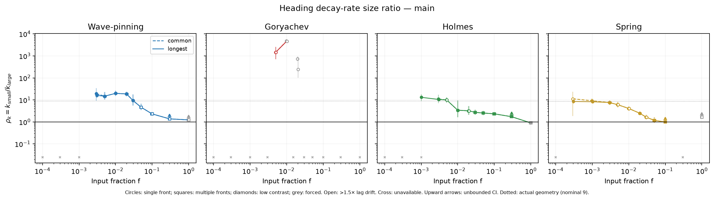
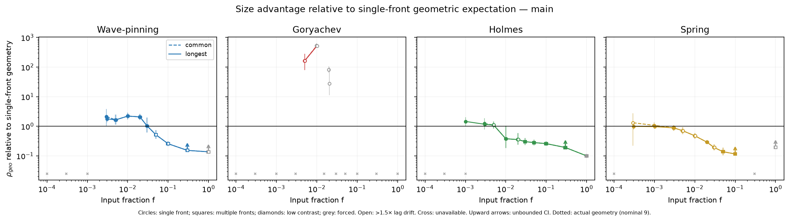
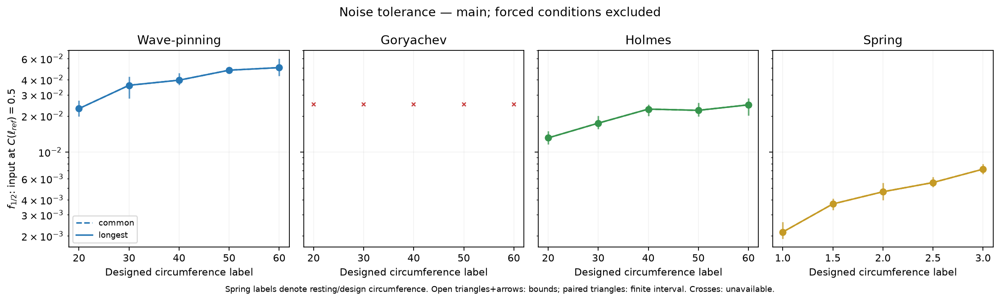
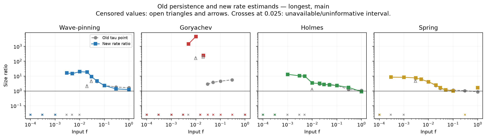

Interim review stop. No replacement Figure 4 main has been built. Existing outputs only; no new simulations or retuning.
Case B: the complete frozen H1 remains inconclusive in the common and longest main-view arms without forced conditions. Its unchanged requirement is a ratio CI strictly above one at every evaluable input, no supported reversal, and non-overlapping size noise-tolerance CIs; weak-to-intermediate gains alone do not satisfy it. At input 0.003, the rate ratios are 19.12, 11.00, 7.55 for Wave-pinning, Holmes and Spring; at 0.05 they are 4.63, 2.53, 1.18, with geometric-normalized ratios 0.51, 0.28, 0.14 and multiple-front majorities. Thus resolved size gains can coexist with erosion below the single-front geometric expectation, while Spring's 0.05 ratio CI includes one. Main-view size noise-tolerance CIs separate in these three models. Goryachev remains coverage/lag/forcing qualified. Updated H2 model calls are reported, but H2 overall retains its legacy direct-time A6 predictor gate, and H3 retains its legacy time-bound definition; neither is a fully revalidated rate-based hypothesis. Stop for review before rebuilding the Figure 4 main.
Data generated: 2026-10-22T01:22:49.973898+00:00. This report has no automatic refresh. Native evidence and the whole-seed bootstrap archive remain on the HPC filesystem; summarized data and review artwork are portable.
These simulations measure activity heading. They remain distinct from observed migration, conditional OU persistence estimates and polarity-reversal readouts. Geometric normalization is relative to the single-front expectation, not site diffusivity.




Circles: single front; squares: multiple fronts; diamonds: low contrast. Grey denotes forced conditions; open rate-ratio points flag more than 1.5-fold lag drift. Upward arrows show unbounded confidence limits. Open triangles and arrows mark bounds; paired triangles mark finite interval bounds. Crosses denote unavailable comparisons at a plotting baseline, not estimates. Spring's size labels denote resting/design circumference; geometric normalization uses its measured mean circumference.